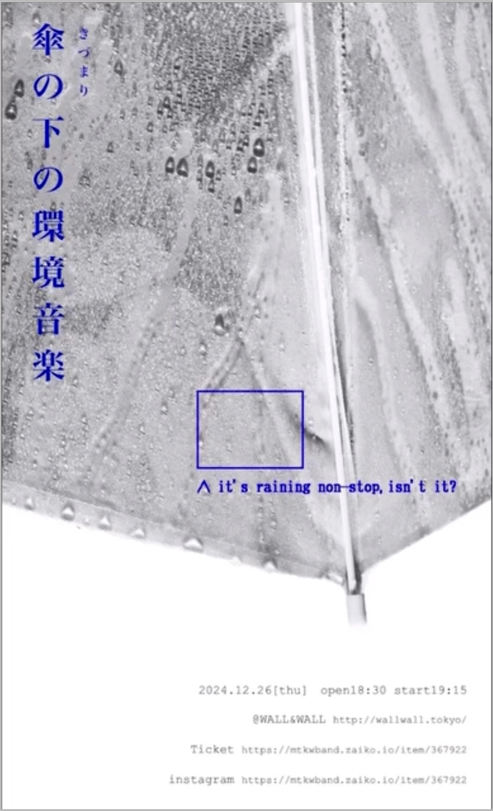

[ きづまり 傘の下の環境音楽 ] website

Medium Website
year November2025
software photoshop / Visual Studio Code
彼らのイベントを開催するにあたり、最大の課題は、ほとんどの楽曲が観客にとって“ライブで初めて聴く曲”であることでした。
その状況を打開するため、私は事前にWebサイトを制作し、観客が来場前に楽曲や背景を知ることができるようにしました。
サイト内には、各楽曲の目次・歌詞・制作背景・作曲者のコメントなどを掲載し、観客がより深く作品に入り込める構成にしています。
さらに、マイク機能を用いて会場で流れている曲を認識し、該当ページに自動で誘導する仕組みを導入することで、来場者の没入感を高めるサポートを行いました。